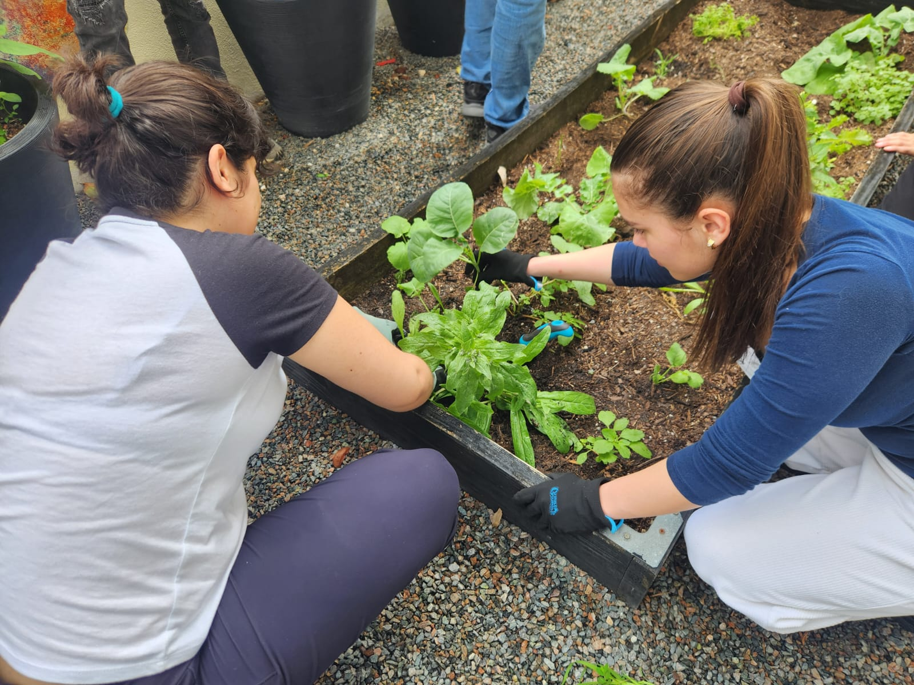
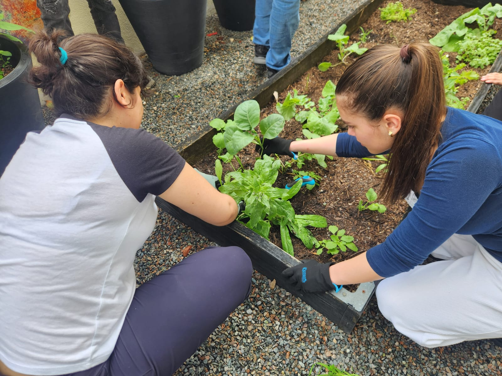

The Eco Club is a student-led organization dedicated to promoting environmental awareness and sustainability within the Miami Dade College Padron Campus community. Through various initiatives such as flower planting, campus clean-ups, and educational workshops, the club encourages students to take an active role in protecting the environment. The Eco Club collaborates with local organizations to support green initiatives and advocate for eco-friendly practices. By fostering a culture of environmental responsibility, the club empowers students to make a positive impact on their surroundings while inspiring others to embrace sustainable living.
The Zen Garden at MDC Padron Campus serves as a peaceful retreat where students can engage in various hands-on activities that promote creativity, sustainability, and relaxation. Participants in the garden contribute by planting small plants, flowers, and vegetables, fostering a greener environment while learning about sustainable gardening practices. In addition to planting, students can express their artistic side by painting decorative elements such as garden stones and signs, adding a unique touch to the space. The garden also serves as an inspiration for designing and enhancing green areas around campus, allowing students to take an active role in creating eco-friendly spaces. Through these activities, the Zen Garden becomes a hub for environmental awareness, artistic expression, and community collaboration.

 

The Zen Garden at MDC Padron Campus is not only a place for relaxation and hands-on activities but also a space for meaningful discussions on environmental conservation and sustainability. Students gather in this tranquil setting to exchange ideas on pressing environmental issues, share knowledge about sustainable practices, and brainstorm innovative ways to promote eco-friendly initiatives on campus. These discussions cover topics such as climate change, waste reduction, renewable energy, and urban green spaces, fostering a deeper understanding of our impact on the environment. By engaging in these conversations, students develop a stronger commitment to sustainability and are inspired to take action, making the Zen Garden a hub for environmental awareness and collective growth.
The members of the Zen Garden naturally come together, each bringing their own strengths to create a peaceful and balanced space. Whether it's shaping the sand, caring for the plants, or just ensuring the overall vibe stays calm, everyone plays a part in maintaining the serenity of the garden. There's a real sense of respect and trust among the group, with everyone open to sharing ideas and supporting each other. This teamwork feels effortless, almost like second nature, as they work toward a common goal. It’s this collaboration that makes the Zen Garden more than just a space—it becomes a reflection of mindfulness and balance, where each person’s contribution adds to the greater whole.